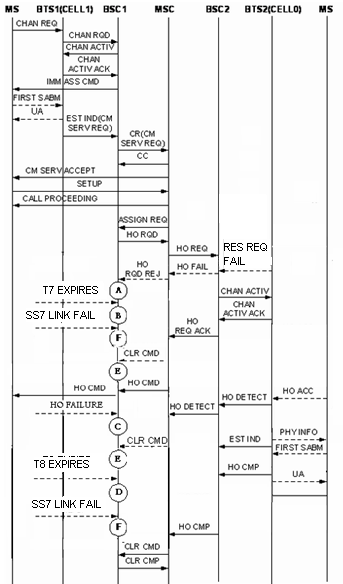

Measurement Counter
H3320W:CELL_INTERBSC_OUTCELL_HO_FAIL_SD_NOT_INCLUDE_DR_900_900
H3320X:CELL_INTERBSC_OUTCELL_HO_FAIL_SD_NOT_INCLUDE_DR_1800_1800
H3320Y:CELL_INTERBSC_OUTCELL_HO_FAIL_SD_NOT_INCLUDE_DR_900_1800
H3320Z:CELL_INTERBSC_OUTCELL_HO_FAIL_SD_NOT_INCLUDE_DR_1800_900
H3327W:CELL_INTERBSC_OUTCELL_HO_FAIL_TCHF_NOT_INCLUDE_DR_900_900
H3327X:CELL_INTERBSC_OUTCELL_HO_FAIL_TCHF_NOT_INCLUDE_DR_1800_1800
H3327Y:CELL_INTERBSC_OUTCELL_HO_FAIL_TCHF_NOT_INCLUDE_DR_900_1800
H3327Z:CELL_INTERBSC_OUTCELL_HO_FAIL_TCHF_NOT_INCLUDE_DR_1800_900
H3328W:CELL_INTERBSC_OUTCELL_HO_FAIL_TCHH_NOT_INCLUDE_DR_900_900
H3328X:CELL_INTERBSC_OUTCELL_HO_FAIL_TCHH_NOT_INCLUDE_DR_1800_1800
H3328Y:CELL_INTERBSC_OUTCELL_HO_FAIL_TCHH_NOT_INCLUDE_DR_900_1800
H3328Z:CELL_INTERBSC_OUTCELL_HO_FAIL_TCHH_NOT_INCLUDE_DR_1800_900
H3321W:CELL_INTERBSC_OUTCELL_HO_FAIL_DR_900_900
H3321X:CELL_INTERBSC_OUTCELL_HO_FAIL_DR_1800_1800
H3321Y:CELL_INTERBSC_OUTCELL_HO_FAIL_DR_900_1800
H3321Z:CELL_INTERBSC_OUTCELL_HO_FAIL_DR_1800_900
H3322A:CELL_INTERBSC_OUTCELL_HO_FAIL_UL_QLTY
H3322B:CELL_INTERBSC_OUTCELL_HO_FAIL_DL_QLTY
H3322C:CELL_INTERBSC_OUTCELL_HO_FAIL_UL_RXL
H3322D:CELL_INTERBSC_OUTCELL_HO_FAIL_DL_RXL
H3322E:CELL_INTERBSC_OUTCELL_HO_FAIL_TA
H3322F:CELL_INTERBSC_OUTCELL_HO_FAIL_BETTER_CELL
H3322G:CELL_INTERBSC_OUTCELL_HO_FAIL_LOAD
H3322H:CELL_INTERBSC_OUTCELL_HO_FAIL_RAPID_LEV_DROP
H3322I:CELL_INTERBSC_OUTCELL_HO_FAIL_MSC_INTERVENTION
H3322J:CELL_INTERBSC_OUTCELL_HO_FAIL_OM_INTERVENTION
H3322L:CELL_INTERBSC_OUTCELL_HO_FAIL_OTHER
H3320L:CELL_INTERBSC_OUTCELL_HO_FAIL_T7_EXP_SD_NOT_INCLUDE_DR
H3327Lb:CELL_INTERBSC_OUTCELL_HO_FAIL_T7_EXP_TCHF_SIG
H3328Lb:CELL_INTERBSC_OUTCELL_HO_FAIL_T7_EXP_TCHH_SIG
H3327La:CELL_INTERBSC_OUTCELL_HO_FAIL_T7_EXP_TCHF_TRAF_CH
H3328La:CELL_INTERBSC_OUTCELL_HO_FAIL_T7_EXP_TCHH_TRAF_CH
H3321L:CELL_INTERBSC_OUTCELL_HO_FAIL_T7_EXP_DR
H3320C:CELL_INTERBSC_OUTCELL_HO_FAIL_T8_EXP_SD_NOT_INCLUDE_DR
H3327Cb:CELL_INTERBSC_OUTCELL_HO_FAIL_T8_EXP_TCHF_SIG
H3328Cb:CELL_INTERBSC_OUTCELL_HO_FAIL_T8_EXP_TCHH_SIG
H3327Ca:CELL_INTERBSC_OUTCELL_HO_FAIL_T8_EXP_TCHF_TRAF_CH
H3328Ca:CELL_INTERBSC_OUTCELL_HO_FAIL_T8_EXP_TCHH_TRAF_CH
H3321C:CELL_INTERBSC_OUTCELL_HO_FAIL_T8_EXP_DR
H332Ka:CELL_INTERBSC_OUTCELL_HO_REQ_REJ_OM_INTERVENTION
H332Kb:CELL_INTERBSC_OUTCELL_HO_REQ_REJ_EQUIP_FAIL
H332Kc:CELL_INTERBSC_OUTCELL_HO_REQ_REJ_NO_RADIO_RES
H332Kd:CELL_INTERBSC_OUTCELL_HO_REQ_REJ_REQ_NO_TER_RES
H332Ke:CELL_INTERBSC_OUTCELL_HO_REQ_REJ_BSS_NOT_EQUIP
H332Kf:CELL_INTERBSC_OUTCELL_HO_REQ_REJ_INVALID_CELL
H332Kg:CELL_INTERBSC_OUTCELL_HO_REQ_REJ_REQ_TRANS_NO_ADAPT
H332Kh:CELL_INTERBSC_OUTCELL_HO_REQ_REJ_CIRCUIT_POOL_MISMATCH
H332Ki:CELL_INTERBSC_OUTCELL_HO_REQ_REJ_REQ_NO_SV
H332Kj:CELL_INTERBSC_OUTCELL_HO_REQ_REJ_CIPH_ALG_NOT_SUPPORT
H332Kk:CELL_INTERBSC_OUTCELL_HO_REQ_REJ_TER_CIR_ALLOC
H332Kl:CELL_INTERBSC_OUTCELL_HO_REQ_REJ_INVALID_MSG
H332Km:CELL_INTERBSC_OUTCELL_HO_REQ_REJ_PROTOCOL_ERR
H332Kn:CELL_INTERBSC_OUTCELL_HO_REQ_REJ_OTHER
H332Ha:CELL_INTERBSC_OUTCELL_HO_FAIL_MSC_CLR_RADIO_INTF_MSG_FAIL
H332Hb:CELL_INTERBSC_OUTCELL_HO_FAIL_MSC_CLR_RADIO_INTF_FAIL
H332Hc:CELL_INTERBSC_OUTCELL_HO_FAIL_MSC_CLR_OM_INTERVENTION
H332Hd:CELL_INTERBSC_OUTCELL_HO_FAIL_MSC_CLR_EQUIP_FAIL
H332He:CELL_INTERBSC_OUTCELL_HO_FAIL_MSC_CLR_PREEMPTION
H332Hf:CELL_INTERBSC_OUTCELL_HO_FAIL_MSC_CLR_INVALID_MSG
H332Hg:CELL_INTERBSC_OUTCELL_HO_FAIL_MSC_CLR_PROTOCOL_ERR
H332Hh:CELL_INTERBSC_OUTCELL_HO_FAIL_MSC_CLR_OTHER
H332G:CELL_INTERBSC_OUTCELL_HO_FAIL_MSC_CLR_A_INTF_FAIL
H332Da:CELL_INTERBSC_OUTCELL_HO_FAIL_RECONN_SUCC_MS_RPT_ABNORM_REL_UNS
H332Db:CELL_INTERBSC_OUTCELL_HO_FAIL_RECONN_SUCC_MS_RPT_ABNORM_REL_CHN
H332Dc:CELL_INTERBSC_OUTCELL_HO_FAIL_RECONN_SUCC_MS_RPT_ABNORM_REL_EXP
H332Dd:CELL_INTERBSC_OUTCELL_HO_FAIL_RECONN_SUCC_MS_RPT_ABNORM_REL_NO_ACT
H332De:CELL_INTERBSC_OUTCELL_HO_FAIL_RECONN_SUCC_MS_RPT_PREEMPT
H332Df:CELL_INTERBSC_OUTCELL_HO_FAIL_RECONN_SUCC_MS_RPT_HO_TA
H332Dg:CELL_INTERBSC_OUTCELL_HO_FAIL_RECONN_SUCC_MS_RPT_CH_MODE
H332Dh:CELL_INTERBSC_OUTCELL_HO_FAIL_RECONN_SUCC_MS_RPT_FREQ
H332Di:CELL_INTERBSC_OUTCELL_HO_FAIL_RECONN_SUCC_MS_RPT_CALL_CLR
H332Dj:CELL_INTERBSC_OUTCELL_HO_FAIL_RECONN_SUCC_MS_RPT_SEMANT
H332Dk:CELL_INTERBSC_OUTCELL_HO_FAIL_RECONN_SUCC_MS_RPT_INVALID_MAN
H332Dl:CELL_INTERBSC_OUTCELL_HO_FAIL_RECONN_SUCC_MS_RPT_MSG_TYPE_NEXISTENT
H332Dm:CELL_INTERBSC_OUTCELL_HO_FAIL_RECONN_SUCC_MS_RPT_MSG_TYPE_NOT_COMPATIBLE
H332Dn:CELL_INTERBSC_OUTCELL_HO_FAIL_RECONN_SUCC_MS_RPT_CONDIT
H332Do:CELL_INTERBSC_OUTCELL_HO_FAIL_RECONN_SUCC_MS_RPT_NO_CA
H332Dp:CELL_INTERBSC_OUTCELL_HO_FAIL_RECONN_SUCC_MS_RPT_PROTOCL
H332Dq:CELL_INTERBSC_OUTCELL_HO_FAIL_RECONN_SUCC_MS_RPT_OTHER
H3323:CELL_INTERBSC_OUTCELL_HO_FAIL_DIFFERENT_SIG_POINT
H332Aa:CELL_INTERBSC_OUTCELL_HO_FAIL_BSC_LOOP
H332Ab:CELL_INTERBSC_OUTCELL_HO_FAIL_BTS_LOOP
Description
During the outgoing external inter-cell handover procedure, if the handover fails because of various causes before the BSC receives the CLEAR CMD message with the cause of Ho Success from the MSC, the specific counter is measured based on the source channel types, handover failure causes, handover causes. Together with Outgoing External Inter-Cell Handover Requests and Outgoing External Inter-Cell Handover Commands, this counter indicates the performance of outgoing external inter-cell handovers.
- H3320W:CELL_INTERBSC_OUTCELL_HO_FAIL_SD_NOT_INCLUDE_DR_900_900
- H3320X:CELL_INTERBSC_OUTCELL_HO_FAIL_SD_NOT_INCLUDE_DR_1800_1800
- H3320Y:CELL_INTERBSC_OUTCELL_HO_FAIL_SD_NOT_INCLUDE_DR_900_1800
- H3320Z:CELL_INTERBSC_OUTCELL_HO_FAIL_SD_NOT_INCLUDE_DR_1800_900
- H3327W:CELL_INTERBSC_OUTCELL_HO_FAIL_TCHF_NOT_INCLUDE_DR_900_900
- H3327X:CELL_INTERBSC_OUTCELL_HO_FAIL_TCHF_NOT_INCLUDE_DR_1800_1800
- H3327Y:CELL_INTERBSC_OUTCELL_HO_FAIL_TCHF_NOT_INCLUDE_DR_900_1800
- H3327Z:CELL_INTERBSC_OUTCELL_HO_FAIL_TCHF_NOT_INCLUDE_DR_1800_900
- H3328W:CELL_INTERBSC_OUTCELL_HO_FAIL_TCHH_NOT_INCLUDE_DR_900_900
- H3328X:CELL_INTERBSC_OUTCELL_HO_FAIL_TCHH_NOT_INCLUDE_DR_1800_1800
- H3328Y:CELL_INTERBSC_OUTCELL_HO_FAIL_TCHH_NOT_INCLUDE_DR_900_1800
- H3328Z:CELL_INTERBSC_OUTCELL_HO_FAIL_TCHH_NOT_INCLUDE_DR_1800_900
Frequency Band of the Originating Cell |
Frequency Band of the Target Cell |
Counter |
|---|---|---|
GSM900, GSM900&DCS1800, GSM850, GSM850&DCS1800, GSM850&PCS1900 |
GSM900, GSM900&DCS1800, GSM850, GSM850&DCS1800, GSM850&PCS1900 |
900_900 |
GSM900, GSM900&DCS1800, GSM850, GSM850&DCS1800, GSM850&PCS1900 |
DCS1800, PCS1900 |
900_1800 |
DCS1800, PCS1900 |
GSM900, GSM900&DCS1800, GSM850, GSM850&DCS1800, GSM850&PCS1900 |
1800_900 |
DCS1800, PCS1900 |
DCS1800, PCS1900 |
1800_1800 |
- H3321W:CELL_INTERBSC_OUTCELL_HO_FAIL_DR_900_900
- H3321X:CELL_INTERBSC_OUTCELL_HO_FAIL_DR_1800_1800
- H3321Y:CELL_INTERBSC_OUTCELL_HO_FAIL_DR_900_1800
- H3321Z:CELL_INTERBSC_OUTCELL_HO_FAIL_DR_1800_900
- The following counters provide the numbers of failed outgoing external inter-cell handovers initiated by the BSC using BQ handover algorithm based on the UL or DL receive quality in the MR. They are measured when the BSC terminates the outgoing external inter-cell handover.
- H3322A:CELL_INTERBSC_OUTCELL_HO_FAIL_UL_QLTY
- H3322B:CELL_INTERBSC_OUTCELL_HO_FAIL_DL_QLTY
 NOTE:
NOTE: The receive quality is evaluated with bit error ratio (BER), and the radio link quality is evaluated with the quality level in the MR. A high BER may be attributed to an excessively low signal level or channel interference.
BQ handover algorithm is for emergency handover based on the uplink or downlink receive quality over the Um interface. If uplink quality rank is greater than or equal to the UL Qual. Threshold, the BQ handover is initiated because of bad uplink quality. If downlink quality rank is greater than or equal to the DL Qual. Threshold, the BQ handover is initiated because of bad downlink quality.
- The following counters provide the numbers of failed outgoing external inter-cell handovers initiated by the BSC using Edge handover algorithm based on the UL or DL receive level in the MR. They are measured when the BSC terminates the outgoing external inter-cell handover.
- H3322C:CELL_INTERBSC_OUTCELL_HO_FAIL_UL_RXL
- H3322D:CELL_INTERBSC_OUTCELL_HO_FAIL_DL_RXL
NOTE: Edge handover algorithm is used to determine whether to initiate a handover based on the uplink or downlink receive level over the Um interface. If the uplink receive level is smaller than the Edge HO UL RX_LEV Threshold, the edge handover is initiated because of the low uplink level. If the downlink receive level is smaller than the Edge HO DL RX_LEV Threshold, the edge handover is initiated because of the low downlink level.
- The following counters provide the numbers of failed outgoing external inter-cell handovers initiated by the BSC using TA handover algorithm based on the TA value in the measurement report. They are measured when the BSC terminates the outgoing external inter-cell handover.
- H3322E:CELL_INTERBSC_OUTCELL_HO_FAIL_TA
NOTE: TA for a common cell: 0-63; TA for a underlaid subcell in a dual-timeslot extended cell: 0-229. If there are 63 bits and each bit step is 553.5 m, the distance is 35 km.
TA handover algorithm is for emergency handover based on the TA value reported by the BTS. If the TA value is greater than the TA Threshold, a TA handover is initiated.
- The following counter provides the number of failed outgoing external inter-cell handovers initiated by the BSC based on the measurement reports using algorithms such as power budget handover (PBGT), inter-layer handover (better cell), and better 3G cell handover. It is measured when the BSC terminates the outgoing external inter-cell handover.
- H3322F:CELL_INTERBSC_OUTCELL_HO_FAIL_BETTER_CELL
NOTE: PBGT handover algorithm is used to decide whether to initiate a handover to a valid cell with a lower path loss.
Inter-layer (better cell) handover algorithm is used to decide whether to initiate a handover to a cell which is on a lower layer than the serving cell and whose downlink level is greater than the Inter-layer HO Threshold.
Better 3G cell handover algorithm is used to determine whether to initiate a handover based on the measurement object. If the measurement object is RSCP and the measured result is greater than the RSCP Threshold for Better 3G Cell HO, or if the measurement object is Ec/No and the measured result is greater than the Ec/NO Threshold for Better 3G Cell HO, then a handover to a 3G better cell is initiated.
- The following counter provides the numbers of failed outgoing external inter-cell handovers initiated by the BSC using load handover algorithm based on the current load conditions in the serving cell. It is measured when the BSC terminates the outgoing external inter-cell handover.
- H3322G:CELL_INTERBSC_OUTCELL_HO_FAIL_LOAD
NOTE: Load handover algorithm is used to decide whether to initiate a handover based on the load conditions on the serving cell and the neighboring cell. If the system signaling flow is smaller than the System Flux Threshold for Load HO, the load on the serving cell is greater than the Load HO Threshold and the load on the target cell is smaller than the Load Req.on Candidate Cell, a load handover is initiated.
- The following counters provide the numbers of failed outgoing external inter-cell handovers initiated by the BSC using the rapid level drop algorithm based on the measurement reports. It is measured when the BSC terminates the outgoing external inter-cell handover.
- H3322H:CELL_INTERBSC_OUTCELL_HO_FAIL_RAPID_LEV_DROP
NOTE: Rapid lever drop algorithm is used to decide whether to initiate a handover based on the downlink receive level in the measurement report. When the drop slope of the downlink receive level meets the specified threshold, a rapid lever drop handover is initiated.
- The following counter provides the number of failed outgoing external inter-cell handovers initiated by the BSC based on the HANDOVER CANDIDATE ENQUIRE message received from the MSC. It is measured when the outgoing external inter-cell handover is terminated.
- H3322I:CELL_INTERBSC_OUTCELL_HO_FAIL_MSC_INTERVENTION
NOTE: After receiving the HANDOVER CANDIDATE ENQUIRE message from the MSC, the BSC instructs proper MSs in the source cell to perform forced handover, based on the originating cell ID and the number of MSs to perform handovers contained in that message. The MSs that are forced to perform handover are as many as the specified number of MSs contained in the message.
- The following counter provides the number of failed outgoing external inter-cell handovers initiated manually by the the maintenance personnel from the maintenance terminal. It is measured when the outgoing external inter-cell handover is terminated.
- H3322J:CELL_INTERBSC_OUTCELL_HO_FAIL_OM_INTERVENTION
- The following counter provides the number of failed outgoing external inter-cell handovers due to other causes except the previous ones. It is measured when the outgoing external inter-cell handover is terminated.
- H3322L:CELL_INTERBSC_OUTCELL_HO_FAIL_OTHER
- If a BSC is configured with multiple signaling points, the procedure of handover between cells at different signaling points is identical with that of the external inter-cell handover. The following counter provides the number of failed outgoing external inter-cell handovers due to various causes during the procedure of handover between cells at different signaling points. It is measured when the outgoing external inter-cell handover is terminated.
- H3323:CELL_INTERBSC_OUTCELL_HO_FAIL_DIFFERENT_SIG_POINT
- When the BSC local switch is enabled, the calls that meet the BSC local switch conditions communicate using the BSC local switch, and those meet the BTS local switch conditions communicate using the BTS local switch. The following counter provides the numbers of failed outgoing external inter-cell handovers initiated by the BSC respectively during BSC loopback and BTS loopback. They are measured when the outgoing external inter-cell handover is terminated.
- H332Aa:CELL_INTERBSC_OUTCELL_HO_FAIL_BSC_LOOP
- H332Ab:CELL_INTERBSC_OUTCELL_HO_FAIL_BTS_LOOP
- (1) The timer T7 for the BSC to wait for an HO CMD message expires.
- (2) The BSC receives an HO RQD REJ message from the MSC.
- (3) The MS fails to access the new channel and then reconnects to the old channel.
- (4) The timer T8 for the BSC to wait for an HO CMP message expires.
- (5) The BSC receives a CLEAR CMD message from the MSC.
- (6) An SS7 link failure occurs on the A interface.‏
- (1) During the outgoing external inter-cell handover procedure, timer T7 is started after the BSC sends the HO RQD to the MSC and waits for the HO CMD command from the MSC. If no HO CMD is received by the BSC before T7 expires, the BSC re-sends the HO RQD message. The specific counter provides the number of failed outgoing external inter-cell handovers when the number of resending times has exceeded the maximum configuration.
- In the outgoing external inter-cell handover (excluding directed retry) procedure, the specific one of the following counters is measured:
- H3320L:CELL_INTERBSC_OUTCELL_HO_FAIL_T7_EXP_SD_NOT_INCLUDE_DR
- H3327Lb:CELL_INTERBSC_OUTCELL_HO_FAIL_T7_EXP_TCHF_SIG
- H3328Lb:CELL_INTERBSC_OUTCELL_HO_FAIL_T7_EXP_TCHH_SIG
- H3327La:CELL_INTERBSC_OUTCELL_HO_FAIL_T7_EXP_TCHF_TRAF_CH
- H3328La:CELL_INTERBSC_OUTCELL_HO_FAIL_T7_EXP_TCHH_TRAF_CH
- In the outgoing external inter-cell handover (directed retry) procedure, the specific one of the following counters is measured:
- H3321L:CELL_INTERBSC_OUTCELL_HO_FAIL_T7_EXP_DR
- In the outgoing external inter-cell handover (excluding directed retry) procedure, the specific one of the following counters is measured:
- (2) The following counters provide the number of times that the BSC terminates the outgoing external inter-cell handover because it receives an HO RQD REJ message from the MSC after sending the HO RQD message to the MSC.
- The counter H332Ka:CELL_INTERBSC_OUTCELL_HO_REQ_REJ_OM_INTERVENTION is measured when the cause value carried in the HO RQD REJ message is OM Intervention.
- The counter H332Kb:CELL_INTERBSC_OUTCELL_HO_REQ_REJ_EQUIP_FAIL is measured when the cause value carried in the HO RQD REJ message is Equipment Failure.
- The counter H332Kc:CELL_INTERBSC_OUTCELL_HO_REQ_REJ_NO_RADIO_RES is measured when the cause value carried in the HO RQD REJ message is No Radio Resource Available.
- The counter H332Kd:CELL_INTERBSC_OUTCELL_HO_REQ_REJ_REQ_NO_TER_RES is measured when the cause value carried in the HO RQD REJ message is Requested Terrestrial Resource Unavailable.
- The counter H332Ke:CELL_INTERBSC_OUTCELL_HO_REQ_REJ_BSS_NOT_EQUIP is measured when the cause value carried in the HO RQD REJ message is BSS not Equipped.
- The counter H332Kf:CELL_INTERBSC_OUTCELL_HO_REQ_REJ_INVALID_CELL is measured when the cause vale carried in the HO RQD REJ message is Invalid Cell.
- The counter H332Kg:CELL_INTERBSC_OUTCELL_HO_REQ_REJ_REQ_TRANS_NO_ADAPT is measured when the cause value carried in the HO RQD REJ message is Requested Transcoding/Rate Adaption Unavailable.
- The counter H332Kh:CELL_INTERBSC_OUTCELL_HO_REQ_REJ_CIRCUIT_POOL_MISMATCH is measured when the cause value carried in the HO RQD REJ message is Circuit Pool Mismatch.
- The counter H332Ki:CELL_INTERBSC_OUTCELL_HO_REQ_REJ_REQ_NO_SV is measured when the cause value carried in the HO RQD REJ message is Requested Speech Version Unavailable.
- The counter H332Kj:CELL_INTERBSC_OUTCELL_HO_REQ_REJ_CIPH_ALG_NOT_SUPPORT is measured when the cause value carried in the HO RQD REJ message is Ciphering Algorithm not Supported.
- The counter H332Kk:CELL_INTERBSC_OUTCELL_HO_REQ_REJ_TER_CIR_ALLOC is measured when the cause value carried in the HO RQD REJ message is Terrestrial Circuit Already Allocated.
- The counter H332Kl:CELL_INTERBSC_OUTCELL_HO_REQ_REJ_INVALID_MSG is measured when the cause value carried in the HO RQD REJ message is Invalid Message.
- The counter H332Km:CELL_INTERBSC_OUTCELL_HO_REQ_REJ_PROTOCOL_ERR is measured when the cause value carried in the HO RQD REJ message is Protocol Error between BSS and MSC.
- The counter H332Kn:CELL_INTERBSC_OUTCELL_HO_REQ_REJ_OTHER is measured when the cause value carried in the HO RQD REJ message is Other Causes.
- (3) In the outgoing external inter-cell handover procedure, the BSC sends an HO CMD message to the MS through the originating cell and initiates timer T8 to wait for an HO CMP message. If the MS reconnects to the old channel and sends an HO FAIL message on the old channel before T8 expires, the specific one of the following counters is measured in the target cell based on the cause value.
- The counter H332Da:CELL_INTERBSC_OUTCELL_HO_FAIL_RECONN_SUCC_MS_RPT_ABNORM_REL_UNS is measured when the cause value carried in the HO FAIL message is Abnormal Release, Unspecified.
- The counter H332Db:CELL_INTERBSC_OUTCELL_HO_FAIL_RECONN_SUCC_MS_RPT_ABNORM_REL_CHN is measured when the cause value carried in the HO FAIL message is Abnormal Release, Channel Unacceptable.
- The counter H332Dc:CELL_INTERBSC_OUTCELL_HO_FAIL_RECONN_SUCC_MS_RPT_ABNORM_REL_EXP is measured when the cause value carried in the HO FAIL message is Abnormal Release, Timer Expired.
- The counter H332Dd:CELL_INTERBSC_OUTCELL_HO_FAIL_RECONN_SUCC_MS_RPT_ABNORM_REL_NO_ACT is measured when the cause value carried in the HO FAIL message is Abnormal Release, No Activity on the Radio Path.
- The counter H332De:CELL_INTERBSC_OUTCELL_HO_FAIL_RECONN_SUCC_MS_RPT_PREEMPT is measured when the cause value carried in the HO FAIL message is Preemptive Release.
- The counter H332Df:CELL_INTERBSC_OUTCELL_HO_FAIL_RECONN_SUCC_MS_RPT_HO_TA is measured when the cause value carried in the HO FAIL message is Handover Failed, Timing Advance out of Range.
- The counter H332Dg:CELL_INTERBSC_OUTCELL_HO_FAIL_RECONN_SUCC_MS_RPT_CH_MODE is measured when the cause value carried in the HO FAIL message is Channel Mode Unavailable.
- The counter H332Dh:CELL_INTERBSC_OUTCELL_HO_FAIL_RECONN_SUCC_MS_RPT_FREQ is measured when the cause value carried in the HO FAIL message is Frequency Unavailable.
- The counter H332Di:CELL_INTERBSC_OUTCELL_HO_FAIL_RECONN_SUCC_MS_RPT_CALL_CLR is measured when the cause value carried in the HO FAIL message is Call Already Cleared.
- The counter H332Dj:CELL_INTERBSC_OUTCELL_HO_FAIL_RECONN_SUCC_MS_RPT_SEMANT is measured when the cause value carried in the HO FAIL message is Semantically Incorrect Message.
- The counter H332Dk:CELL_INTERBSC_OUTCELL_HO_FAIL_RECONN_SUCC_MS_RPT_INVALID_MAN is measured when the cause value carried in the HO FAIL message is Invalid Mandatory Information.
- The counter H332Dl:CELL_INTERBSC_OUTCELL_HO_FAIL_RECONN_SUCC_MS_RPT_MSG_TYPE_NEXISTENT is measured when the cause value carried in the HO FAIL message is Message Type Non-existent or Not Implemented.
- The counter H332Dm:CELL_INTERBSC_OUTCELL_HO_FAIL_RECONN_SUCC_MS_RPT_MSG_TYPE_NOT_COMPATIBLE is measured when the cause value carried in the HO FAIL message is Message Type Not Compatible with Protocol State.
- The counter H332Dn:CELL_INTERBSC_OUTCELL_HO_FAIL_RECONN_SUCC_MS_RPT_CONDIT is measured when the cause value carried in the HO FAIL message is Conditional IE Error.
- The counter H332Do:CELL_INTERBSC_OUTCELL_HO_FAIL_RECONN_SUCC_MS_RPT_NO_CA is measured when the cause value carried in the HO FAIL message is No Cell Allocation Available.
- The counter H332Dp:CELL_INTERBSC_OUTCELL_HO_FAIL_RECONN_SUCC_MS_RPT_PROTOCL is measured when the cause value carried in the HO FAIL message is Protocol Error Unspecified.
- The counter H332Dq:CELL_INTERBSC_OUTCELL_HO_FAIL_RECONN_SUCC_MS_RPT_OTHER is measured when the cause value carried in the HO FAIL message is Other Causes.
- (4) In the outgoing external inter-cell handover procedure, after sending the HO CMD message to the MS, the BSC starts the timer T8 to wait for the CLEAR CMD message from the MSC. The specific counter provides the number of times that the BSC terminates the handover due to the expiration of T8.
- In the outgoing external inter-cell handover (excluding directed retry) procedure, the specific one of the following counters is measured:
- H3320C:CELL_INTERBSC_OUTCELL_HO_FAIL_T8_EXP_SD_NOT_INCLUDE_DR
- H3327Cb:CELL_INTERBSC_OUTCELL_HO_FAIL_T8_EXP_TCHF_SIG
- H3328Cb:CELL_INTERBSC_OUTCELL_HO_FAIL_T8_EXP_TCHH_SIG
- H3327Ca:CELL_INTERBSC_OUTCELL_HO_FAIL_T8_EXP_TCHF_TRAF_CH
- H3328Ca:CELL_INTERBSC_OUTCELL_HO_FAIL_T8_EXP_TCHH_TRAF_CH
- In the outgoing external inter-cell handover (directed retry) procedure, the specific one of the following counters is measured:
- H3321C:CELL_INTERBSC_OUTCELL_HO_FAIL_T8_EXP_DR
- In the outgoing external inter-cell handover (excluding directed retry) procedure, the specific one of the following counters is measured:
- (5) The following counters provides the number of times that the BSC terminates the outgoing external inter-cell handover because the BSC receives a CLEAR CMD message from the MSC and the cause value carried in the message is not 0x0B (Handover successful).
- The counter H332Ha:CELL_INTERBSC_OUTCELL_HO_FAIL_MSC_CLR_RADIO_INTF_MSG_FAIL is measured when the cause value carried in the CLEAR CMD message is Radio Interface Message Failure.
- The counter H332Hb:CELL_INTERBSC_OUTCELL_HO_FAIL_MSC_CLR_RADIO_INTF_FAIL is measured when the cause value carried in the CLEAR CMD message is Radio Interface Failure.
- The counter H332Hc:CELL_INTERBSC_OUTCELL_HO_FAIL_MSC_CLR_OM_INTERVENTION is measured when the cause value carried in the CLEAR CMD message is OM Intervention.
- The counter H332Hd:CELL_INTERBSC_OUTCELL_HO_FAIL_MSC_CLR_EQUIP_FAIL is measured when the cause value carried in the CLEAR CMD message is Equipment Failure.
- The counter H332He:CELL_INTERBSC_OUTCELL_HO_FAIL_MSC_CLR_PREEMPTION is measured when the cause value carried in the CLEAR CMD message is Preemption.
- The counter H332Hf:CELL_INTERBSC_OUTCELL_HO_FAIL_MSC_CLR_INVALID_MSG is measured when the cause value carried in the CLEAR CMD message is Invalid Message.
- The counter H332Hg:CELL_INTERBSC_OUTCELL_HO_FAIL_MSC_CLR_PROTOCOL_ERR is measured when the cause value carried in the CLEAR CMD message is Protocol Error between BSS and MSC.
- The counter H332Hh:CELL_INTERBSC_OUTCELL_HO_FAIL_MSC_CLR_OTHER is measured when the cause value carried in the CLEAR CMD message is Other Causes.
- (6) The following counter provides the number of failed outgoing external inter-cell handovers when the BSC detects an SS7 link failure on the A interface and releases the call:
- H332G:CELL_INTERBSC_OUTCELL_HO_FAIL_MSC_CLR_A_INTF_FAIL
Unit
Integer number or integer.
Measurement Point
Figure 1 shows the measurement of the counters related to failed outgoing external inter-cell handovers (excluding directed retry).

Figure 2 shows the measurement of the counters related to failed outgoing external inter-cell handovers (directed retry).

- As shown in Figure 1 and Figure 2, during the outgoing external inter-cell handover procedure, the following counters are measured at A if the handover fails because the BSC receives an HO RQD REJ message from the MSC after sending the HO RQD message to the MSC.
- H332Ka:CELL_INTERBSC_OUTCELL_HO_REQ_REJ_OM_INTERVENTION
- H332Kb:CELL_INTERBSC_OUTCELL_HO_REQ_REJ_EQUIP_FAIL
- H332Kc:CELL_INTERBSC_OUTCELL_HO_REQ_REJ_NO_RADIO_RES
- H332Kd:CELL_INTERBSC_OUTCELL_HO_REQ_REJ_REQ_NO_TER_RES
- H332Ke:CELL_INTERBSC_OUTCELL_HO_REQ_REJ_BSS_NOT_EQUIP
- H332Kf:CELL_INTERBSC_OUTCELL_HO_REQ_REJ_INVALID_CELL
- H332Kg:CELL_INTERBSC_OUTCELL_HO_REQ_REJ_REQ_TRANS_NO_ADAPT
- H332Kh:CELL_INTERBSC_OUTCELL_HO_REQ_REJ_CIRCUIT_POOL_MISMATCH
- H332Ki:CELL_INTERBSC_OUTCELL_HO_REQ_REJ_REQ_NO_SV
- H332Kj:CELL_INTERBSC_OUTCELL_HO_REQ_REJ_CIPH_ALG_NOT_SUPPORT
- H332Kk:CELL_INTERBSC_OUTCELL_HO_REQ_REJ_TER_CIR_ALLOC
- H332Kl:CELL_INTERBSC_OUTCELL_HO_REQ_REJ_INVALID_MSG
- H332Km:CELL_INTERBSC_OUTCELL_HO_REQ_REJ_PROTOCOL_ERR
- H332Kn:CELL_INTERBSC_OUTCELL_HO_REQ_REJ_OTHER
- During the outgoing external inter-cell handover procedure, timer T7 is started after the BSC sends the HO RQD to the MSC. As shown in Figure 1, the following counter is measured at B if the handover fails because T7 expires and the number of resending times has exceeded the maximum configuration.
- H3320L:CELL_INTERBSC_OUTCELL_HO_FAIL_T7_EXP_SD_NOT_INCLUDE_DR
- H3327Lb:CELL_INTERBSC_OUTCELL_HO_FAIL_T7_EXP_TCHF_SIG
- H3328Lb:CELL_INTERBSC_OUTCELL_HO_FAIL_T7_EXP_TCHH_SIG
- H3327La:CELL_INTERBSC_OUTCELL_HO_FAIL_T7_EXP_TCHF_TRAF_CH
- H3328La:CELL_INTERBSC_OUTCELL_HO_FAIL_T7_EXP_TCHH_TRAF_CH
- During the outgoing external inter-cell handover procedure, timer T7 is started after the BSC sends the HO RQD to the MSC. As shown in Figure 1, the following counter is measured at B if the handover fails because T7 expires and the number of resending times has exceeded the maximum configuration.
- H3321L:CELL_INTERBSC_OUTCELL_HO_FAIL_T7_EXP_DR
- As shown in Figure 1 and Figure 2, during the outgoing external inter-cell handover procedure, this counter is measured at C when the BSC receives the HO FAIL message from the MS after the BSC sends the HO CMD message to the MS and the MS cannot access the new channel.
- H332Da:CELL_INTERBSC_OUTCELL_HO_FAIL_RECONN_SUCC_MS_RPT_ABNORM_REL_UNS
- H332Db:CELL_INTERBSC_OUTCELL_HO_FAIL_RECONN_SUCC_MS_RPT_ABNORM_REL_CHN
- H332Dc:CELL_INTERBSC_OUTCELL_HO_FAIL_RECONN_SUCC_MS_RPT_ABNORM_REL_EXP
- H332Dd:CELL_INTERBSC_OUTCELL_HO_FAIL_RECONN_SUCC_MS_RPT_ABNORM_REL_NO_ACT
- H332De:CELL_INTERBSC_OUTCELL_HO_FAIL_RECONN_SUCC_MS_RPT_PREEMPT
- H332Df:CELL_INTERBSC_OUTCELL_HO_FAIL_RECONN_SUCC_MS_RPT_HO_TA
- H332Dg:CELL_INTERBSC_OUTCELL_HO_FAIL_RECONN_SUCC_MS_RPT_CH_MODE
- H332Dh:CELL_INTERBSC_OUTCELL_HO_FAIL_RECONN_SUCC_MS_RPT_FREQ
- H332Di:CELL_INTERBSC_OUTCELL_HO_FAIL_RECONN_SUCC_MS_RPT_CALL_CLR
- H332Dj:CELL_INTERBSC_OUTCELL_HO_FAIL_RECONN_SUCC_MS_RPT_SEMANT
- H332Dk:CELL_INTERBSC_OUTCELL_HO_FAIL_RECONN_SUCC_MS_RPT_INVALID_MAN
- H332Dl:CELL_INTERBSC_OUTCELL_HO_FAIL_RECONN_SUCC_MS_RPT_MSG_TYPE_NEXISTENT
- H332Dm:CELL_INTERBSC_OUTCELL_HO_FAIL_RECONN_SUCC_MS_RPT_MSG_TYPE_NOT_COMPATIBLE
- H332Dn:CELL_INTERBSC_OUTCELL_HO_FAIL_RECONN_SUCC_MS_RPT_CONDIT
- H332Do:CELL_INTERBSC_OUTCELL_HO_FAIL_RECONN_SUCC_MS_RPT_NO_CA
- H332Dp:CELL_INTERBSC_OUTCELL_HO_FAIL_RECONN_SUCC_MS_RPT_PROTOCL
- H332Dq:CELL_INTERBSC_OUTCELL_HO_FAIL_RECONN_SUCC_MS_RPT_OTHER
- During the outgoing external inter-cell handover procedure, timer T8 is started after the BSC sends the HO CMD message to the MS. As shown in Figure 1, the specific counter is measured at D when the handover fails because T8 expires.
- H3320C:CELL_INTERBSC_OUTCELL_HO_FAIL_T8_EXP_SD_NOT_INCLUDE_DR
- H3327Cb:CELL_INTERBSC_OUTCELL_HO_FAIL_T8_EXP_TCHF_SIG
- H3328Cb:CELL_INTERBSC_OUTCELL_HO_FAIL_T8_EXP_TCHH_SIG
- H3327Ca:CELL_INTERBSC_OUTCELL_HO_FAIL_T8_EXP_TCHF_TRAF_CH
- H3328Ca:CELL_INTERBSC_OUTCELL_HO_FAIL_T8_EXP_TCHH_TRAF_CH
- During the outgoing external inter-cell handover procedure, timer T8 is started after the BSC sends the HO CMD message to the MS. As shown in Figure 2, the specific counter is measured at D when the handover fails because T8 expires.
- H3321C:CELL_INTERBSC_OUTCELL_HO_FAIL_T8_EXP_DR
- As shown in Figure 1 and Figure 2, during the outgoing external inter-cell handover procedure, the specific counter is measured at E if the handover fails because the BSC releases the call after receiving a CLEAR CMD message from the MSCl:
- H332Ha:CELL_INTERBSC_OUTCELL_HO_FAIL_MSC_CLR_RADIO_INTF_MSG_FAIL
- H332Hb:CELL_INTERBSC_OUTCELL_HO_FAIL_MSC_CLR_RADIO_INTF_FAIL
- H332Hc:CELL_INTERBSC_OUTCELL_HO_FAIL_MSC_CLR_OM_INTERVENTION
- H332Hd:CELL_INTERBSC_OUTCELL_HO_FAIL_MSC_CLR_EQUIP_FAIL
- H332He:CELL_INTERBSC_OUTCELL_HO_FAIL_MSC_CLR_PREEMPTION
- H332Hf:CELL_INTERBSC_OUTCELL_HO_FAIL_MSC_CLR_INVALID_MSG
- H332Hg:CELL_INTERBSC_OUTCELL_HO_FAIL_MSC_CLR_PROTOCOL_ERR
- H332Hh:CELL_INTERBSC_OUTCELL_HO_FAIL_MSC_CLR_OTHER
- As shown in Figure 1 and Figure 2, the following counter is measured at F when the outgoing external inter-cell handover fails because the BSC detects an SS7 link failure on the A interface and releases the call:
- H332G:CELL_INTERBSC_OUTCELL_HO_FAIL_MSC_CLR_A_INTF_FAIL
- As shown in Figure 1, the specific one of the following counters is measured at A, B, C, D, E, and F when the outgoing external inter-cell handover (excluding directed retry) fails:
- H3320W:CELL_INTERBSC_OUTCELL_HO_FAIL_SD_NOT_INCLUDE_DR_900_900
- H3320X:CELL_INTERBSC_OUTCELL_HO_FAIL_SD_NOT_INCLUDE_DR_1800_1800
- H3320Y:CELL_INTERBSC_OUTCELL_HO_FAIL_SD_NOT_INCLUDE_DR_900_1800
- H3320Z:CELL_INTERBSC_OUTCELL_HO_FAIL_SD_NOT_INCLUDE_DR_1800_900
- H3327W:CELL_INTERBSC_OUTCELL_HO_FAIL_TCHF_NOT_INCLUDE_DR_900_900
- H3327X:CELL_INTERBSC_OUTCELL_HO_FAIL_TCHF_NOT_INCLUDE_DR_1800_1800
- H3327Y:CELL_INTERBSC_OUTCELL_HO_FAIL_TCHF_NOT_INCLUDE_DR_900_1800
- H3327Z:CELL_INTERBSC_OUTCELL_HO_FAIL_TCHF_NOT_INCLUDE_DR_1800_900
- H3328W:CELL_INTERBSC_OUTCELL_HO_FAIL_TCHH_NOT_INCLUDE_DR_900_900
- H3328X:CELL_INTERBSC_OUTCELL_HO_FAIL_TCHH_NOT_INCLUDE_DR_1800_1800
- H3328Y:CELL_INTERBSC_OUTCELL_HO_FAIL_TCHH_NOT_INCLUDE_DR_900_1800
- H3328Z:CELL_INTERBSC_OUTCELL_HO_FAIL_TCHH_NOT_INCLUDE_DR_1800_900
- As shown in Figure 2, the specific one of the following counters is measured at A, B, C, D, E, and F when the outgoing external inter-cell handover (directed retry) fails:
- H3321W:CELL_INTERBSC_OUTCELL_HO_FAIL_DR_900_900
- H3321X:CELL_INTERBSC_OUTCELL_HO_FAIL_DR_1800_1800
- H3321Y:CELL_INTERBSC_OUTCELL_HO_FAIL_DR_900_1800
- H3321Z:CELL_INTERBSC_OUTCELL_HO_FAIL_DR_1800_900
- As shown in Figure 1 and Figure 2, the specific one of the following counters is measured at A, B, C, D, E, and F when the outgoing external inter-cell handover fails:
- H3322A:CELL_INTERBSC_OUTCELL_HO_FAIL_UL_QLTY
- H3322B:CELL_INTERBSC_OUTCELL_HO_FAIL_DL_QLTY
- H3322C:CELL_INTERBSC_OUTCELL_HO_FAIL_UL_RXL
- H3322D:CELL_INTERBSC_OUTCELL_HO_FAIL_DL_RXL
- H3322E:CELL_INTERBSC_OUTCELL_HO_FAIL_TA
- H3322F:CELL_INTERBSC_OUTCELL_HO_FAIL_BETTER_CELL
- H3322G:CELL_INTERBSC_OUTCELL_HO_FAIL_LOAD
- H3322H:CELL_INTERBSC_OUTCELL_HO_FAIL_RAPID_LEV_DROP
- H3322I:CELL_INTERBSC_OUTCELL_HO_FAIL_MSC_INTERVENTION
- H3322J:CELL_INTERBSC_OUTCELL_HO_FAIL_OM_INTERVENTION
- H3322L:CELL_INTERBSC_OUTCELL_HO_FAIL_OTHER
- H3323:CELL_INTERBSC_OUTCELL_HO_FAIL_DIFFERENT_SIG_POINT
- H332Aa:CELL_INTERBSC_OUTCELL_HO_FAIL_BSC_LOOP
- H332Ab:CELL_INTERBSC_OUTCELL_HO_FAIL_BTS_LOOP
Formula
This is an original counter without involving any formula.